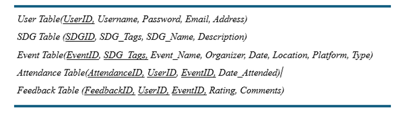

Proposal for SDG-Active
Introduction:
The Sustainable Development Goals (SDGs), adopted by all United Nations Member States in 2015, provide a universal call to action to end poverty, protect the planet, and ensure prosperity for all by 2030. With 17 goals addressing various socio-economic, and environmental challenges, the SDGs represent a framework for sustainable development (United Nations). Increasing global focus on sustainability created a need for a platform that promotes awareness and actively engages individuals in SDG-related activities. This proposal outlines the development of a Sustainable Development Goals Monitoring App/Database, SDG-Active, designed to connect users with events aligned with their interests and the SDGs they are passionate about.
Aim and Objectives:
The aim of this project is to create a user-friendly app and database that actively contributes to the advancement of Sustainable Development Goals by:
Connecting users with relevant events around them and promoting awareness and/or active participation in SDG-related activities.
Facilitating user engagement and feedback on both events and the app itself.
Fostering a sense of community among individuals committed to sustainable development.
Data and Data Sources
To achieve the project objectives, the following types of data would be essential:
Event Data: This includes event details (name, date, location, organizers). It will include the SDG alignment tags that represent the event goals or objectives.
User Data: This will include user profiles (preferences, interests, attended events). There will also be a section for user feedback and reviews.
SDG Information: Detailed information on each Sustainable Development Goal.
Geospatial Data: This will include locational data for events and users; and maps for visualizing event distribution.
Data Sources:
United Nations: SDG Actions Platforms - https://sdgs.un.org/partnerships
In certain sections of this project, dummy/fabricated data will be used.
The names of students from our class (as possible users/organizers). No real personal information will be disclosed or utilized in this project and ethics will be considered.
Schema:
The following is a preliminary outline of the relation schema for SDG-Active;

Interface
Designing the interface for a web database involves creating a user-friendly and efficient system. Here’s an outline of the design considerations or elements for the interface:
Dashboard: The dashboard will display key information and statistics and provide visual elements like charts or graphs for quick insights. For example, the number of people interested in particular events or SDGs, notifications on events or error messages on data validation or submission, etc.
Navigation menu/home menu: There will be a navigation menu for easy access to different sections (UXPin, 2023).
Data entry/Search and Filters: User-friendly forms for easy data entry with clear labels and instructions for the users/organizers. There will be a search tool or function for quick data retrieval. There will also be a filter function so users can refine their searches based on specific needs. Data will be displayed in interactive tables and will allow users to customize their view using checkboxes, dropdowns, etc. (UXPin, 2023).
Map Representations/capabilities: It will use maps to show locational data. For example, show nearest events to users, etc.
Feedback Mechanism: It will include feedback mechanisms for users to report issues about the app/events or suggest improvements.
User Permissions: There will be a control system to manage user authentication/authorization and ensure users only have access to the resources relevant to their roles (Frontegg, 2022)
Method
Relational Database Design: For this project, a relational database design will be used. This is because a relational database is well-established, strong support, suitable for complex relationships. Relational databases are based on the relational model, which organizes data into tables with rows and columns, and establishes relationships between tables (Silberschatz, A. et al, 2011).
The database will be created using a Relational Database Management System (RDBMS), known as PostgreSQL. This is an open-source object-relational database system that uses and extends the SQL language to safely store and scale the most complicated data workloads (PostgreSQL, 2024).
References
United Nations-Department of Economic and Social Affairs Sustainable Development. (2024). THE 17 GOALS. Retrieved from United Nations: https://sdgs.un.org/goals
Silberschatz, A., Korth, H. F., & Sudarshan, S. (2011). Database system concepts. McGraw-Hill.
UXPin. (2023, August). User Interface Elements Every Designer Should Know. Retrieved from UXPin : https://www.uxpin.com/studio/blog/user-interface-elements-every-designer-should-know/
PostgreSQL. (2024). About. Retrieved from PostgreSQL: https://www.postgresql.org/about/
Frontegg. (2022, June). User management - What Are User Permissions? Concepts, Examples, and Maintenance. Retrieved from Frontegg: https://frontegg.com/guides/user-permission.